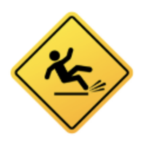
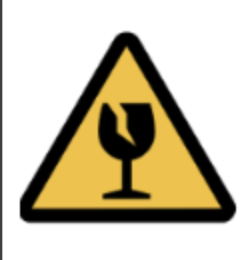
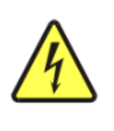
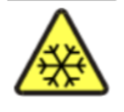

| Hazard | Risk | Precautionary Measure | Symbol | Source |
|---|---|---|---|---|
| water spill | You can slip and injure your head or different body parts. | always keep the floor clean and dry. |
 |
CLEAPSS |
| equipment falling and crash | you can injure your hand | always wear gloves and covered shoes to prevent cuts on your body parts. |
 |
CLEAPSS |
| electronic kettle | you might burn your finger or arms when the hot water spills/ you might get an electronic shuck when you try to turn on the code of the kettle. | always wear PPE, dry your hand completely before turning on the electronic kettle. |
 |
CLEAPSS |
| cold ice | you might get frostbite when you keep holding ice with your bare hand. | wear gloves to prevent frostbite and try to use tongs to transport the ice. |
 |
general knowledge |
| Calcium chloride Anhydrous / hydrated solid & concentrated solution (if 0.9M or more) | WARNING: causes skin and serious eye irritation and may cause respiratory irritation. | Irrigate the eye with gently-running tap water for at least 20 minutes. Call 999/111. | CLEAPSS |